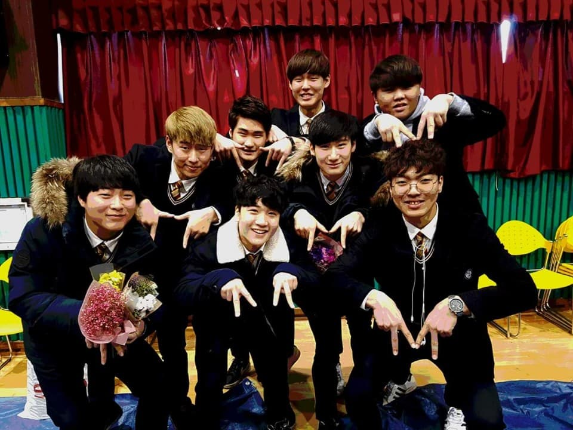
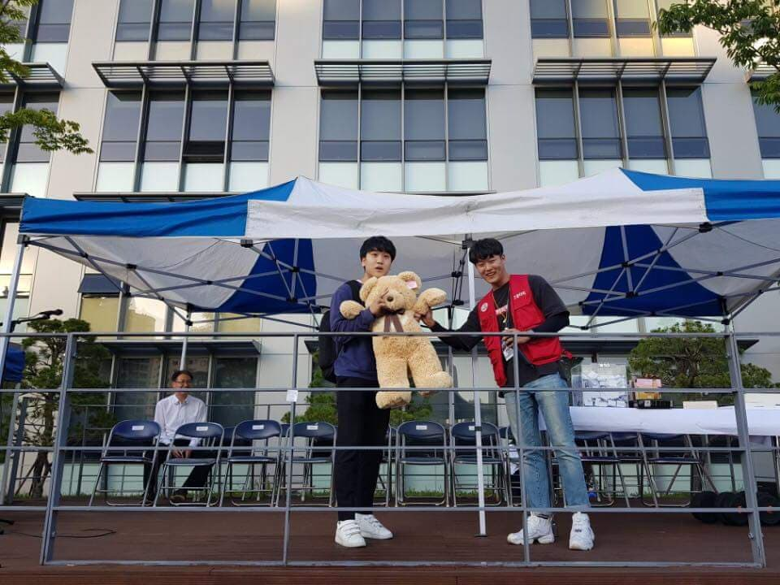
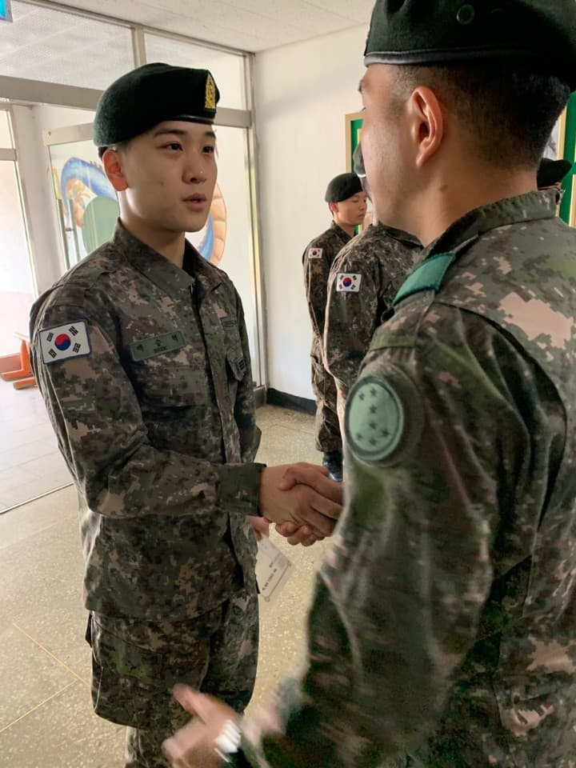

인생사
1998년 서울에서 태어나 별 다른 문제 없이 잘 자라왔다. 학창시절 공부를 잘하는 편은 아니였고 공부보단 예체능 쪽에서 재능이 보였지만 여러문제로 결국 취업을 위해 전문대 진학을 선택하였고 그 결과 동양미래대학교에 입학하게 되었다.
백승혁(1998.08.01~)은 1998년 서울에서 태어나 2017년 동양미래대학교에 입학해서 2018년도 군대에 갔다온 후 2020년 다시 복학을해서 17년도에 성적이 좋지 못했던 인터넷 기초 실습을 재수강 하고 있다.
|  |  |  |
| 고등학교 졸업 | 17년도 1학년 체육대회 | 입대후 대대장 표창 시상식 |
1998년 서울에서 태어나 별 다른 문제 없이 잘 자라왔다. 학창시절 공부를 잘하는 편은 아니였고 공부보단 예체능 쪽에서 재능이 보였지만 여러문제로 결국 취업을 위해 전문대 진학을 선택하였고 그 결과 동양미래대학교에 입학하게 되었다.
평소 노래부르는 것과 운동을 좋아한다. 운동은 입대하기 전부터 좋아했고 입대한 이후 본격적으로 열심히 한 결과 17년도에 비해서 몸이 많이 좋아졌다. 사진으로 인증하고 싶지만 좀 그렇다고 생각 되어 사진을 따로 올리지 않겠다.
저는 군대에서 가능함만을 배웠고 어중간한것 만큼 한심한 것은 없다고 배웠다. 그렇기에 앞으로 가능만을 바라보고 어중간한 것이 아닌 확실한 것이 되기위해 노력할 것이다.
@@잘 부탁 드립니다 ^_^@@